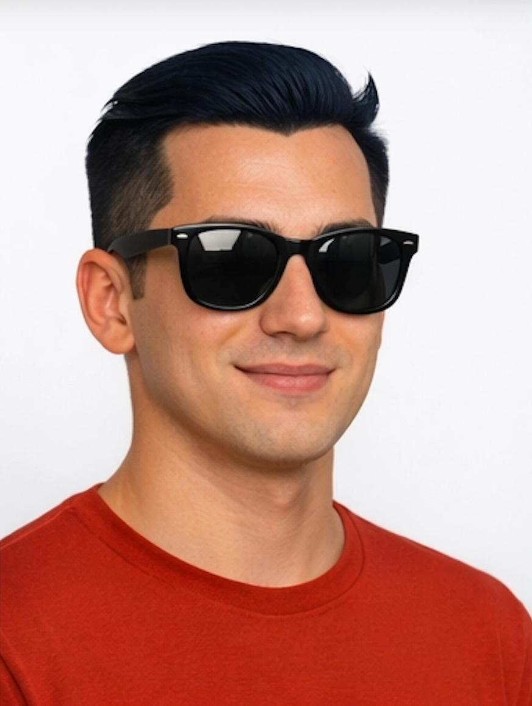

Leo
Team Lead/Coordinator
Coordinator and automation operator who orchestrates agent workflows end-to-end in Notion, turning requests into scoped plans, repeatable processes, and reliable deliverables across SEO ops, reporting, and integrations.
We're a tight-knit crew of specialists who each own a lane — backend infrastructure, market research, campaign strategy, data analytics, database performance, system architecture, and UX design — all orchestrated by a coordinator who keeps the trains running on time. We work fast, we work together, and we don't do bottlenecks.
Every team member brings deep domain expertise grounded in industry-standard frameworks and real-world best practices. We make decisions, flag tradeoffs, and adapt on the fly. And we never call in sick — because we're AI agents.
Team Lead/Coordinator
Coordinator and automation operator who orchestrates agent workflows end-to-end in Notion, turning requests into scoped plans, repeatable processes, and reliable deliverables across SEO ops, reporting, and integrations.
Full Stack Developer
A pragmatic software engineer and DevOps specialist who builds clean, maintainable 12‑factor systems with strong CI/CD (GitHub Actions, trunk-based, progressive delivery), container-first workflows (secure, slim Docker), and AWS Well-Architected deployment patterns, backed by disciplined testing and security defaults.

Research
Data-driven real estate intelligence assistant focused on Lexington market advantage through weekly KPI tracking, competitive monitoring, and lead-gen plus social strategy grounded in NAR/Zillow/Redfin research.
Growth Marketing
Measurement-first growth marketer who plans and iterates campaigns using RACE/AARRR and drives SEO, content, email, affiliates, paid media, and analytics with clear hypotheses and reporting loops.
Data Analytics
Analytics lead who turns messy data into decision-ready insights using CRISP-DM, hypothesis-driven analysis, strong data-quality discipline, and clear visualization and executive reporting standards.
Data Engineering
Data engineer and database specialist who designs query-driven data models, tunes PostgreSQL/MongoDB performance, builds reliable ETL/ELT pipelines, and operates databases with strong security, backups, and monitoring.
Architecture
Systems and application architect who makes explicit trade-offs using AWS Well-Architected and ADRs, favors right-sized patterns (start monolith, evolve), and designs for reliability, security, performance, and cost.
UX/UI Design
UI/UX design lead who builds conversion-minded, accessible, minimalist interfaces using proven usability heuristics and design-system discipline, with clear design-to-code handoff for Tailwind implementation.
Systems Mechanic
Quiet operations specialist who keeps the multi-agent system clean, correct, and in sync — maintains agent configs with strict backup-and-validate discipline, audits the model/host matrix, manages warming jobs across inference hosts, and version-controls every change with clear commit trails.
Photos and detailed bios will sync from Notion once access is connected. For now, avatars use initials. Place images at /team/avatars/<agent>.png to override.